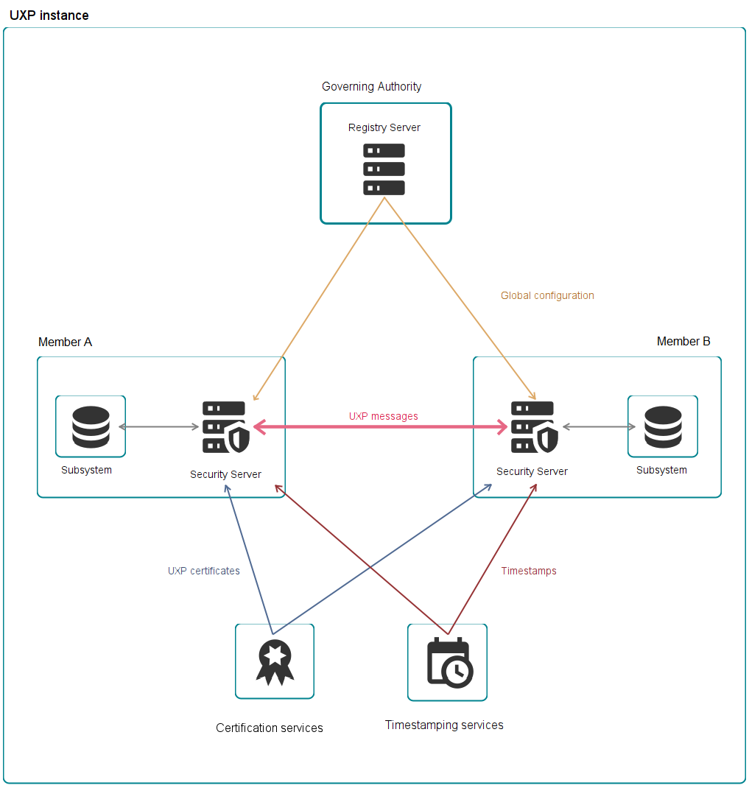

1. Introduction
This guide is aimed at Key Managers, who are responsible for the signing key of a UXP member in the Trembita security server.
This guide does not explain how to operate UXP security server and it assumes that the operation is delegated to someone else (a UXP operator). Turn to your UXP operator for assistance about:
-
user management;
-
signature creation devices;
-
server health;
-
system logs.
1.1. UXP Security Server
The main function of a security server is to mediate requests in a way that preserves their evidential value.
The security server is connected to the public Internet from one side and to the information system within the organization’s internal network from the other side. In a sense, the security server can be seen as a specialized application-level firewall that can mediate SOAP and RESTful web services; hence, it should be set up in parallel with the organization’s firewall, which mediates other protocols.
The security server is equipped with the functionality needed to secure the message exchange between a client and a service provider.
-
Messages transmitted over the public Internet are secured using digital signatures and encryption.
-
The service provider’s security server applies access control to incoming messages, thus ensuring that only those users that have signed an appropriate agreement with the service provider can access the data.
1.2. UXP Concepts
-
UXP instance is a single installation of the UXP infrastructure.
-
UXP Governing Authority is an organization that is responsible for maintaining the UXP instance.
-
UXP member is a natural or legal person who has joined UXP to provide or consume services, or both.
-
Subsystem represents a part of a UXP member’s information system. UXP members must declare parts of their information systems as subsystems to use or provide UXP services.
Subsystems are autonomous in terms of providing and using UXP services.-
The access rights of UXP members' subsystems are independent — access rights given to one subsystem do not affect the access rights of the member’s other subsystems.
-
Services provided by a subsystem are independent of the services provided by the member’s other subsystems.
A UXP member can associate several different subsystems with one security server, and one subsystem can be associated with several security servers.
-
-
Member identifier is the unique identifier of a UXP member. Member identifier consists of three parts: an instance identifier, a member class, and a member code. An example member identifier is
EE/GOV/12345678. -
Instance identifier is a unique code assigned to a UXP instance. E.g., the code for the Estonian development instance is
EE-DEVand the code for production instance isEE. -
Member class groups UXP members with similar properties under a common unit. E.g., state agencies are grouped under the member class
GOV, private organizations are grouped under the member classCOM. -
Member code is associated with a certain UXP member and is unique within the member class. The member code remains unchanged during the entire lifetime of the UXP member. For example, the member code for organizations and state agencies in Estonia is the Business Registry code.
-
Subsystem code is added to the member identifier to distinguish member’s individual subsystems.
-
Registry Server is a UXP component operated by the Governing Authority that serves as a registry of information required to run the UXP instance. UXP registry server distributes this information to security servers in the form of global configuration.
-
Security Server is a UXP component that connects a UXP member’s subsystems to the UXP infrastructure.
-
Security server owner is a UXP member legally responsible for a particular security server.
-
Security server client is a subsystem registered in a security server. The registration must be confirmed by the Governing Authority and approved in the registry server.
-
Global configuration is a file that contains information that security servers require for operating. Security servers regularly download the global configuration from the registry server. Examples of information in the global configuration:
-
UXP members and their subsystems;
-
registered security servers;
-
registered security server clients;
-
registered authentication certificates;
-
global groups;
-
UXP system parameters;
-
addresses and public keys of OCSP services (if not already available through the certificates' Authority Information Access extension);
-
the addresses and public keys of approved certification services providers;
-
public keys of intermediate CAs;
-
the addresses and public keys of approved timestamping services providers.
-
-
Global group is an access rights group managed on the registry server level. All subsystems in the global group have the access rights that are assigned to the group.
-
Local group is an access rights group managed on the security server client level.
-
Timestamping Authority (TSA) is a service provider that issues timestamps.
-
Timestamping services are services provided by TSA to preserve the evidential value of the messages exchanged over the UXP.
-
Timestamp is a date and time with a signature issued by the TSA to prove that a message existed at a specific time.
-
Certification Authority (CA) is a certification service provider who issues digital certificates.
-
Certification services are services provided by CA to UXP members, offering digital certificates that verify the ownership of a public key.
-
OCSP stands for Online Certificate Status Protocol. OCSP responders are servers operated by the Certification Authority to allow querying for validity of certificates.
-
UXP keys are cryptographic keys used in the UXP. In UXP, public and private key pairs are used.
A UXP key is either:-
a signing key — used by security servers to digitally sign exchanged messages or
-
an authentication key — used by security servers to establish secure communications channels.
-
-
UXP certificates are certificates issued by a certification service provider that has been approved in the UXP Governing Authority.
-
Signature creation device is a mechanism external to security server for protecting cryptographic keys security server uses for signing messages. Examples of signature creation devices are hardware security modules (HSMs) and USB tokens.
-
Token is a storage for protecting the cryptographic keys security server uses. Security server has two types of tokens:
-
software token — a software based token built-in the security server,
-
hardware token — a token on a signature creation device.
-
-
UXP services are services provided over UXP infrastructure.
-
UXP message is a one-directional data exchange between a service client and provider within the UXP instance. Depending on its origin, a message can be either a request or a response message. UXP messages must be formed according to the UXP Message Protocol ([UXP-PR-MESS]) and they are created by the information systems of UXP members.
-
Service client is the UXP member’s subsystem that sent the request message.
-
Service provider is the UXP member’s subsystem that sent the response message to the service client in response of the request message.
-
Signature container is a file that contains the signed UXP message, digital signature, timestamp and related certificates.
-
Transaction is the combination of request message and the corresponding response message.
-
Transaction ID is a transaction identifier the security server of the service client assigns while processing a request message from the information system. Transaction ID is automatically generated by the security server to contain a unique value for every message mediated by the security server.
The transaction ID can be used to uniquely identify a UXP message.
-
-
Query is a request message, queries are initiated by the service client.
-
Query ID is a transaction identifier, which is a part of the message header (
idin SOAP headers ([UXP-PR-MESS]) andUxp-Queryidin HTTP headers). Query ID is assigned by the information system of the service client.
-
-
UXP headers or message headers are specific headers used to include UXP specific metainfo in UXP messages.
-
For SOAP services, see headers in [UXP-PR-MESS].
-
For REST services, the UXP headers are:
-
Uxp-Client
-
Uxp-Service
-
Uxp-Queryid
-
Uxp-Transaction-Id
-
Uxp-Userid
-
Uxp-Consent-Ref
-
Uxp-Issue
-
-

2. Managing My Account
2.1. Viewing My Roles
To see which roles your account has, follow these steps:
-
Hover over your username in the top right corner.
-
Click My Account. In the table you can see which roles you have for which members.
If you do not see your members in security server, or you do not have the roles you need, contact your Server Administrator.
2.2. Changing Password
To change your account’s password, follow these steps:
-
Hover over your username in the top right corner.
-
Click Change Password.
-
Enter the old and new password and click Save.
Once you have changed your password, your session will be terminated, and you must log in again.
2.3. Resetting Forgotten Password
If you have forgotten your password, contact your Server Administrator and ask them to reset your password.
3. Signing Keys
Each UXP member needs a signing key with a certificate on the security server. The server uses the signing key to issue digital signatures to the messages of the UXP member.
To see the signing keys and certificates of the member, go to the Member Keys page of the member. You will see the keys on their corresponding tokens. If the member has keys on tokens that you do not have privileges to access, you will just see those keys.
3.1. Tokens
Tokens are storages for protecting the cryptographic keys security server uses. Keys on tokens are protected by a PIN. Security server can use the keys on a token only when the PIN is entered (token is logged in). When the token is logged out, for example during server restart, it is important to log in the token as soon as possible to restore the message exchange.
Security server distinguishes two types of tokens based on the physical location of the token:
-
software token — a software based token built-in the security server,
-
hardware token — a token on a signature creation device.
Each token in the security server is owned by a UXP member. The token owner’s Key Manager can create new keys on the token and import certificates. The keys and certificates do not have to belong to the token owner, but the Key Manager has to have privileges for the member whose keys he wants to handle.
In the token details, you can:
-
rename the token;
-
view the token type (software or hardware token);
-
if the token is hardware token, view the name of the device in server the token is on;
-
view if the token is read-only (in that case, it is not possible to create new keys on the token, the token must already have a key and certificate and you must import the certificate to the security server);
-
view which key algorithms the token supports.
3.1.1. Software Tokens
Software token can be used when there is no requirement to use an external device for protecting the signing key. Server Administrator assigns software tokens to members.
To start using software token:
-
Set the token PIN if it does not have one yet.
-
Request a certificate from a certificate authority.
It is important to remember the token PIN or store it securely in a password manager. Once the PIN is forgotten and the token is logged out (happens during server restart), the keys on the token can not be used or restored without the PIN.
3.1.2. Hardware Tokens
Hardware tokens are used when the signing key will be on an external device (HSM, USB token). Server Administrator connects the signature creation device to the security server and assigns a token from the device to the member.
Key Manager has to know the PIN of the token.
There are different supported scenarios on how to use a hardware token, depending on whether the key and certificate are already prepared or the token is empty.
Key on device and certificate as a file
If the key is on the device but the certificate was handed over as a file, Key Manager has to:
-
Make sure the hardware token is logged in and available.
-
Import the certificate file to the server. Security server searches for the key on the device. If found, server stores the certificate and reference to the key in the security server.
Key and certificate on device
The device may come with a pregenerated key and certificate. In that case, Key Manager has to import the certificate from the device to server.
No key on device
If the hardware token does not have a pregenerated key and certificate, Key Manager has to:
-
Request a certificate from a certificate authority.
3.2. Generating a Key and CSR
Access rights: Key Manager
First step in getting a signing certificate for the server or a UXP member is generating a key and corresponding certificate signing request (CSR) for sending to the certification service.
To generate a key and a CSR, follow these steps.
-
Go to the Member Keys page.
-
Choose a token for the key. Log in the token if needed.
In case of an unavailable, locked or, not initialized hardware token, the situation must be resolved before you can generate a key. -
Click Generate Key and CSR.
-
Choose the key type:
-
Security server supports generating keys on three different elliptic curve (EC) algorithms:
-
NIST P-256 (also known as secp256r1 or prime256v1);
-
NIST P-384 (also known as secp384r1 or prime384v1);
-
NIST P-521 (also known as secp521r1 or prime521v1).
For hardware tokens, the list of supported algorithms may be shorter based on what algorithms the specific signature creation device supports.
-
-
-
Choose the UXP member who will be the owner of this signing key.
-
Choose the certification service that will issue the certificate.
-
Optionally provide a name for the key to later distinguish it from other keys.
-
Choose in which format you would like to have the CSR file (certification service might expect a specific format).
-
If the subject distinguished name requires any input, complete the form. Usually the values are prefilled.
-
Click Generate.
The CSR file will download automatically. The CSR will appear under the token and you can download the file again if needed.
Forward the CSR file to the certification service provider. After receiving the certificate, import it to the security server.
3.3. Importing a Certificate File
Access Rights: Key Manager
To import a certificate file to the security server, follow these steps.
-
Go to the Member Keys page.
-
Find the token where the key is on (optionally also a CSR if you generated one). Make sure the token is logged in.
-
Click Import Certificate.
-
Choose Import File.
-
Find the certificate file in your computer and click Import.
|
If the security server can not find a key for the uploaded certificate, make sure that:
|
After importing the certificate, the certificate will appear under the token. If you had a CSR, it will be deleted.
Signing key is ready to use right after certificate import. No extra steps are required.
| Certificates have an expiration date, after which the associated key becomes unusable. When a certificate expires, you must obtain a new key and certificate. The security server will display an alert one month before a certificate’s expiration. |
3.4. Importing a Certificate from a Device
Access Rights: Key Manager
When you have a key and certificate pair you would like to use on the signature creation device already, you must import the certificate to the server before the server can use the key for signing.
To import a certificate to the security server from a device, follow these steps.
-
Go to the Member Keys page.
-
Find the hardware token with the key and certificate. If you can not find the token, Server Administrator must add the device and token to the security server first.
-
Make sure the token is logged in.
-
Click Import Certificate.
-
Choose Import from Device.
-
Find the certificate and click Import.
The certificate must be a signing certificate issued to a member in security server.
After successful import, the certificate will appear under the token. Signing key is ready to use right after certificate import. No extra steps are required.
| Certificates have an expiration date, after which the associated key becomes unusable. When a certificate expires, you must obtain a new key and certificate. The security server will display an alert one month before a certificate’s expiration. |
3.5. Activating and Deactivating Certificates
Access rights: Key Manager
Security server can not use certificates that are inactive.
If security server has multiple active certificates for the same purpose, security server will choose one of the active certificates.
To activate or deactivate a certificate, find a certificate you would like to activate or deactivate and toggle the button on the certificate row.
3.6. Deleting a Certificate or a Certificate Signing Request
Access rights: Key Manager
If the certificate or CSR were the only certificate or CSR related to the key, the key is deleted as well.
| When deleting certificates or CSRs with keys on hardware tokens, security server will try to delete the key from the signature creation device. When security server can not delete the key from the device (for example, when the security server can not access the key on the device or the key is already deleted from the device), you can continue to delete the certificate/CSR and its key from just the security server. The key will remain on the device (unless already deleted). |
To delete a certificate or a CSR, find a certificate or CSR you would like to delete and click Delete and confirm.
3.7. Certificate Validity
Another two attributes that determine whether the security server can use a certificate are validity period and OCSP response.
The validity period of the certificate is determined by the date of issue and date of expiration. A certificate becomes expired once the expiration date passes.
OCSP response indicates whether the certificate is still approved by the certification service.
A security server certificate can have one of the following OCSP responses:
-
Unknown (validity information missing) – the last OCSP response was either "unknown" (the responder doesn’t know about the certificate being requested) or an error.
-
Suspended – the last OCSP response about the certificate was "suspended".
-
Good (valid) – the last OCSP response about the certificate was "good". Only certificates in the "good" (valid) state can be used to sign messages or establish a connection between security servers.
-
Revoked – the last OCSP response about the certificate was "revoked". The certificate is not active and OCSP queries are not performed about it.
-
Outdated – the latest OCSP response is older than allowed by the OCSP response validity period.
-
Not checked – security server does not query the OCSP response of the certificate because the certificate is not in use (for example, the certificate is inactive or not registered).
3.8. Key Types
You can generate three different types of keys in the security server – using three different elliptic curve (EC) algorithms:
-
NIST P-256 (also known as secp256r1 or prime256v1);
-
NIST P-384 (also known as secp384r1 or prime384v1);
-
NIST P-521 (also known as secp521r1 or prime521v1).
| For hardware tokens, the list of supported algorithms may be shorter based on what algorithms the specific signature creation device supports. |
For all of the key types, the size of the public key determines both the security of the keys and the speed of performing operations with the key. Longer keys are safer but slower at performing operations.
When choosing a key type for a new key, take into account any advice given by your UXP governing authority. Also make sure your chosen key type is supported by your certificate authority.
4. Management API
4.1. Rest API
Security Server allows you to programmatically retrieve and modify configuration of the server via a REST API.
4.1.1. Security Server Administration API
Administration API is used for configuring and general management of the security server. API documentation can be found at:
https://<security-server>:4000/api/v1/openapi-ui
4.1.2. Identity Provider API
Identity Provider API is used for managing and authenticating/authorizing users of the security server. API documentation can be found at:
https://<security-server>:4000/auth-api/v1/openapi-ui